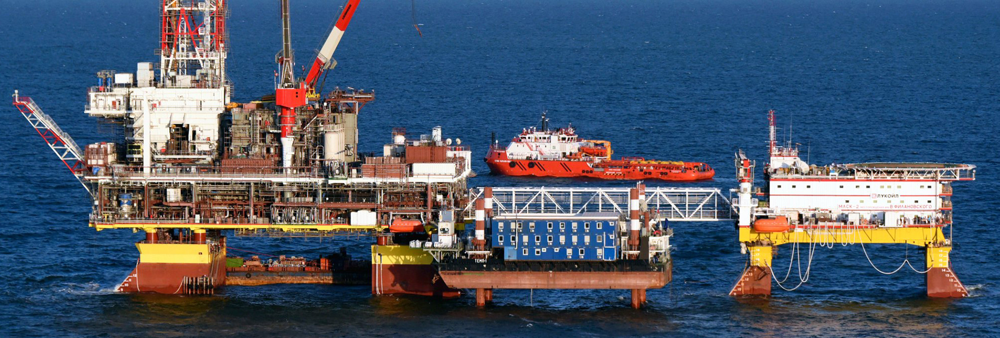
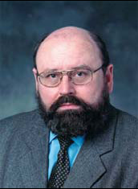

ЧЛЕНЫ СОЮЗА «РИСКОМ»
ОБЩЕСТВО С ОГРАНИЧЕННОЙ ОТВЕТСТВЕННОСТЬЮ «ДИАПАК»

Генеральный директор к.ф-м.н., III уровень по АЭ по диагностике Шемякин В.В.

Компания ДИАПАК была создана на базе лаборатории акустических методов контроля Российского Научного Центра "Курчатовский Институт". Цель создания компании - обеспечение качественной экспертизы опасных промышленных объектов с использованием современных аппаратно-программных комплексов и методик. Сотрудники компании имеют более чем 30-летний опыт работы в различных областях промышленности, таких как атомная энергетика, нефтехимическая и газовая промышленность, трубопроводный транспорт, предприятия среднего и общего машиностроения, авиапромышленность.
Основными объектами экспертизы промышленной безопасности и технического контроля являются:
- магистральные трубопроводы (линейная часть, переходы, запорная арматура, трубопроводы насосных, компрессорных, газораспределительных станций);
- механо-технологическое оборудование и запорная арматура НПС;
- нефтехимические предприятия;
- нефте- и газоперерабатывающие заводы;
- нефтебазы, хранилища топлива и ГСМ, АЗС;
- резервуары, цистерны и сосуды давления любой емкости;
- предприятия атомной энергетики;
- корабли и подводные лодки;
- ж/д транспорт, автоцистерны;
- металлоконструкции кранов и подъемников;
- силовые трансформаторы.
В состав методов неразрушающего контроля, применяемых при проведении экспертизы, входят акустическая эмиссия, ультразвук, рентген, магнитные методы, вихретоковый метод, вибродиагностика, и т.д.
Компания ДИАПАК - эксклюзивный представитель компании PHYSICAL ACOUSTICS CORPORATION (PAC), и член корпорацииMISTRAS HOLDINGS GROUP (www.mistrasholdings.com), которая является мировым лидером в области производства оборудования и создания методик неразрушающего контроля. Продукция компании РАС, отличающаяся высокой надежностью, хорошо известна во всех странах и используется уже более 25 лет на объектах России и СНГ. Акустические датчики, производимые компанией РАС для множества различных приложений, признаны лучшими в мире.
Наряду с диагностическими работами компания ДИАПАК предлагает заказчикам широкую гамму современной аппаратуры для неразрущающего контроля.
- Многоканальные полностью цифровые системы DiSP, SAMOS и PCI-2.
- Основой системы DiSP является 4-канальная плата, работающая в частотном диапазоне 10 – 2000 кГц.
- Система SAMOS имеет 8 каналов приема сигналов АЭ. Полоса входных частот 1 - 400 кГц.
- Для исследовательских целей разработана 2-х канальная плата PCI-2, имеющая диапазон входных частот 3 – 3000 кГц.
Одноплатные АЭ системы фирмы РАС на базе компьютерной шины PCI были первыми изделиями в данной области техники, использующие в своем составе цифровые сигнальные микропроцессоры. На базе этих плат строятся многоканальные системы и комплексы для мониторинга. Характерной особенностью аппаратуры является возможность записи формы сигналов в реальном времени.
Программное обеспечение для управления аппаратурой и обработки АЭ данных работает в операционной среде Windows. Компания поставляет также автоматизированные системы УЗ дефектоскопии американской фирмы NDTAutomationи вибродиагностические комплексы фирмы VibraMetrics. Обе фирмы входят в группу компаний MISTRASHOLDINGSGROUP. Вся аппаратура создается на базе последних достижений современной техники и микроэлектроники с использованием опыта применения в диагностических работах. Аппаратура компании РАС сертифицирована Госстандартом России.
Благодаря партнерству с MISTRAS HOLDINGS GROUP компания ДИАПАК имеет уникальную возможность внедрять в России и СНГ передовые технологии неразрушающего контроля, созданные и опробованные в России и во всех подразделениях холдинга в 15 странах мира (Великобритании, Франции, Бразилии, Аргентины, Китае, Японии, Индии, Греции и др.). Примером являются, уже широко известные и хорошо зарекомендовавшие себя в России технологии АЭ контроля сосудов давления и резервуаров "MONPAC", днищ резервуаров без их вскрытия "TANKPAC", диагностики трубопроводов "PIPEPAC", технологии контроля протечек через затвор арматуры "VPAC", контроля частичных разрядов в масляных трансфортрансформаторах "POWERPAC", контроля локальной коррозии "CORPAC" и другие.
Большой интерес представляют комплексные системы мониторинга промышленных объектов с использованием возможностей Интернет для обмена информацией и квалифицированного анализа данных.
Компания ДИАПАК имеет квалифицированный штат специалистов и современное аппаратно-программное обеспечение для проведения высококачественной экспертизы промышленной безопасности производственных объектов любой сложности.
пециалистами ДИАПАК проводятся также работы по разработке методических рекомендаций для контроля конкретных объектов, проводятся исследовательские работы. Значительный опыт, накопленный специалистами компании в области экспертизы промышленной безопасности производственных объектов, позволяет точно определить потребности наших заказчиков и рекомендовать поставку оборудования в оптимальной конфигурации.
За годы работы нашими постоянными заказчиками стали многие ведущие компании России и СНГ, в том числе ОАО «Азот», ОАО «Лукойл», ПО “Диасиб”, ОАО “Газпром”, НПО «Молния», ОАО «Каустик», ОАО АК «Транснефть», ПО “НАФТАН” (Беларусь), ПО «Киришинефтеоргсинтез», ОАО «Салаватнефтеоргсинтез», ОКБ “Машиностроение”, и многие другие.
Наши специалисты сертифицированы и имеют опыт работы за рубежом – в США, Македонии, Италии, Иране, Индии, Вьетнаме, Аргентине.
Основанием для проведения экспертизы промышленной безопасности являются следующие документы:
- Лицензия Госгортехнадзора России №00-ДЭ-000586 (ДКНТХ);
- Свидетельство об аккредитации в Системе Экспертизы Промышленной Безопасности № 01302.